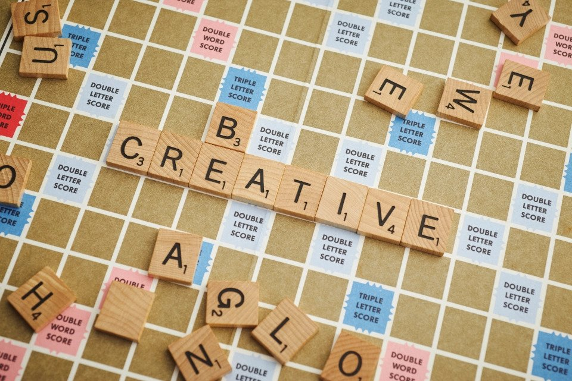

About
What's a blog?

"A blog (a truncation of "weblog")[1] is a discussion or informational website published on the World Wide Web consisting of discrete, often informal diary-style text entries (posts). Posts are typically displayed in reverse chronological order, so that the most recent post appears first, at the top of the web page. Until 2009, blogs were usually the work of a single individual,[citation needed] occasionally of a small group, and often covered a single subject or topic. In the 2010s, "multi-author blogs" (MABs) emerged, featuring the writing of multiple authors and sometimes professionally edited. MABs from newspapers, other media outlets, universities, think tanks, advocacy groups, and similar institutions account for an increasing quantity of blog traffic. The rise of Twitter and other "microblogging" systems helps integrate MABs and single-author blogs into the news media. Blog can also be used as a verb, meaning to maintain or add content to a blog." - Wikipedia
About the Author
I am currently a student pursuing higher education. In addition, I am taking available opportunities available to gain more knowledge and keep learning. In my opinion, to keep moving forward, we always need to keep learning. I am interested in learning new technologies and coding practices.
Creative Outlet
I created this website/blog for creativity. Although my usual temperament is analytical, I enjoy having a creative outlet. I am aiming to add different effects and images to make this engaging. The blog should attract readers so that they have a great time also. The content will be quirky, funny, and entertaining.